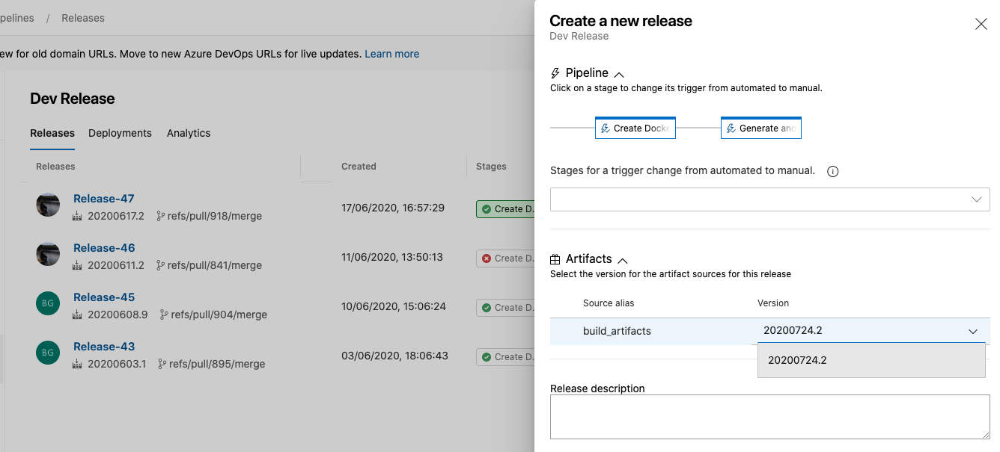
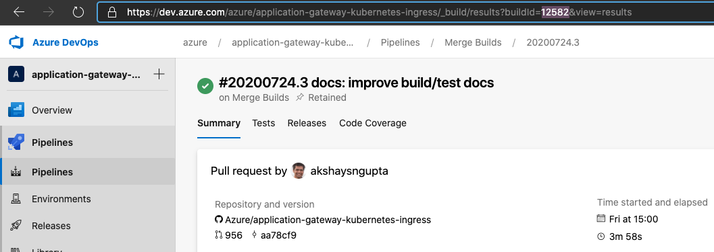

Building the controller
- Running it locally
- Pre-requisite
- Obtain Azure Credentials
- Deploy Application Gateway and AKS
- Using startup script
- Visual Studio Code (F5 debugging)
- Run on a cluster using a Dev Release
- CMake options
Running it locally
This section outlines the environment variables and files necessary to successfully compile and run the Go binary, then connect it to an Azure Kubernetes Service.
Pre-requisite
- go >= 1.13
- OpenSSL
Obtain Azure Credentials
In order to run the Go binary locally and control a remote AKS server, you need Azure credentials. These will be stored in a JSON file in your home directory.
Follow these instructions to create the $HOME/.azure/azureAuth.json file. The file is generated via:
az ad sp create-for-rbac --sdk-auth > $HOME/.azure/azureAuth.json
The file will contain a JSON blob with the following shape:
{
"clientId": "...",
"clientSecret": "...",
"subscriptionId": "<your-azure-subscription-id>",
"tenantId": "...",
"activeDirectoryEndpointUrl": "https://login.microsoftonline.com",
"resourceManagerEndpointUrl": "https://management.azure.com/",
"activeDirectoryGraphResourceId": "https://graph.windows.net/",
"sqlManagementEndpointUrl": "https://management.core.windows.net:8443/",
"galleryEndpointUrl": "https://gallery.azure.com/",
"managementEndpointUrl": "https://management.core.windows.net/"
}
Deploy Application Gateway and AKS
To deploy a fresh setup, please follow the steps for template deployment in the greenfield documentation.
Using startup script
In the scripts directory you will find start.sh. This script builds and runs the ingress controller on your local machine and connects to a remote AKS cluster. A .env file in the root of the repository is required.
Steps to run ingress controller:
-
Get your cluster's credentials
az aks get-credentials --name <cluster-name> --resource-group <group> -
Configure:
cp .env.example .envand modify the environment variables in.envto match your config. Here is an example:#!/bin/bash export AZURE_AUTH_LOCATION="$HOME/.azure/azureAuth.json" export APPGW_RESOURCE_ID="<gateway-resource-id>" export KUBE_CONFIG_FILE="$HOME/.kube/config" export APPGW_VERBOSITY_LEVEL="9" -
Run:
./scripts/start.shCleanup: delete /home/vsonline/go/src/github.com/Azure/application-gateway-kubernetes-ingress/bin Compiling... Build SUCCEEDED ERROR: logging before flag.Parse: I0723 18:37:31.980903 6757 utils.go:115] Using verbosity level 9 from environment variable APPGW_VERBOSITY_LEVEL Version: 1.2.0; Commit: ef716c14; Date: 2020-07-23-18:37T+0000 ERROR: logging before flag.Parse: I0723 18:37:31.989656 6766 utils.go:115] Using verbosity level 9 from environment variable APPGW_VERBOSITY_LEVEL ERROR: logging before flag.Parse: I0723 18:37:31.989720 6766 main.go:78] Unable to load cloud provider config ''. Error: Reading Az Context file "" failed: open : no such file or directory E0723 18:37:31.999445 6766 context.go:210] Error fetching AGIC Pod (This may happen if AGIC is running in a test environment). Error: resource name may not be empty I0723 18:37:31.999466 6766 environment.go:240] KUBERNETES_WATCHNAMESPACE is not set. Watching all available namespaces. ...
Visual Studio Code (F5 debugging)
You can also setup vscode to run the project with F5 and use breakpoint debugging. For this, you need to setup your launch.json file within .vscode folder.
{
"version": "0.2.0",
"configurations": [
{
"name": "Debug",
"type": "go",
"request": "launch",
"mode": "debug",
"program": "${workspaceFolder}/cmd/appgw-ingress",
"env": {
"APPGW_VERBOSITY_LEVEL": "9",
"AZURE_AUTH_LOCATION": "/home/<user>/.azure/azureAuth.json",
"APPGW_RESOURCE_ID": "<gateway-resource-id>"
},
"args": [
"--kubeconfig=/home/<user>/.kube/config",
"--in-cluster=false"
]
}
]
}
Create a Dev Release
To test your changes on a cluster, you can use the Dev Release pipeline. Just select the build version from the drop-down list which matches the build in your PR or against your commit in the main branch.

Dev Release generates a new docker image and helm package for your changes. Once the pipeline completes, use helm to install the release on your AKS cluster.
# add the staging helm repository
helm repo add staging https://appgwingress.blob.core.windows.net/ingress-azure-helm-package-staging/
helm repo update
# list the available versions and pick the latest version
helm search repo staging -l --devel
NAME CHART VERSION APP VERSION DESCRIPTION
staging/ingress-azure 10486 10486 Use Azure Application Gateway as the ingress fo...
staging/ingress-azure 10465 10465 Use Azure Application Gateway as the ingress fo...
staging/ingress-azure 10256 10256 Use Azure Application Gateway as the ingress fo...
# install/upgrade
helm install ingress-azure \
-f helm-config.yaml \
oci://mcr.microsoft.com/azure-application-gateway/charts/ingress-azure \
--version 10486
You can also find the version by opening your build in the Merge Builds pipeline and looking for the buildid. Use this version when installing on the cluster after the Dev Release completes.

CMake options
This is a CMake-based project. Build targets include:
ALL_BUILD(default target) buildsappgw-ingressanddockerizetargetdevenvbuilds a docker image with configured development environmentvendorinstalls dependency usinggo modin a docker container with image fromdevenvtargetappgw-ingressbuilds the binary for this controller in a docker container with image fromdevenvtargetdockerizebuilds a docker image with the binary fromappgw-ingresstargetdockerpushpushes the docker image to a container registry with prefix defined in CMake variable<deployment_push_prefix>
To run the CMake targets:
mkdir build && cd buildcreates and enters a build directorycmake ..generates project configuration in the build directorycmake --build .to build the default target, orcmake --build . --target <target_name>to specify a target to run from above